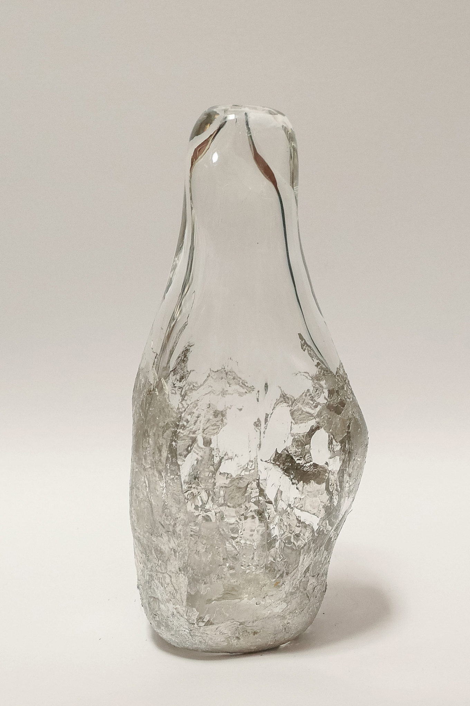
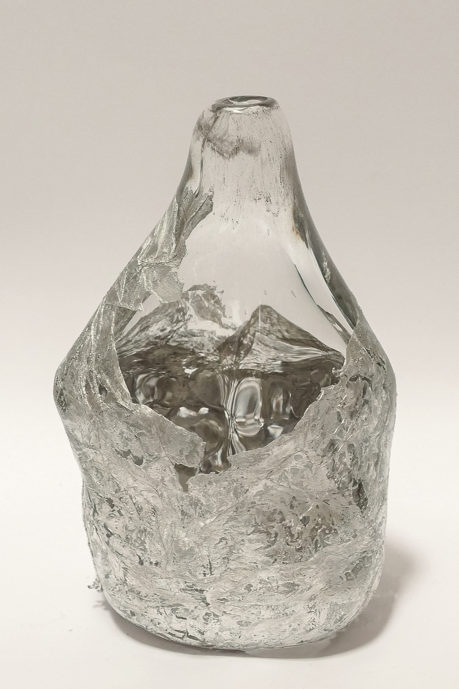
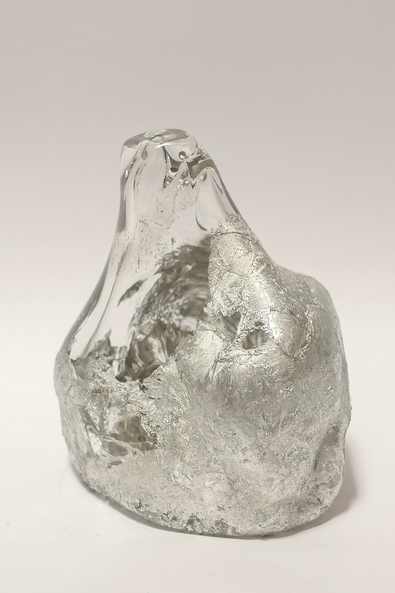
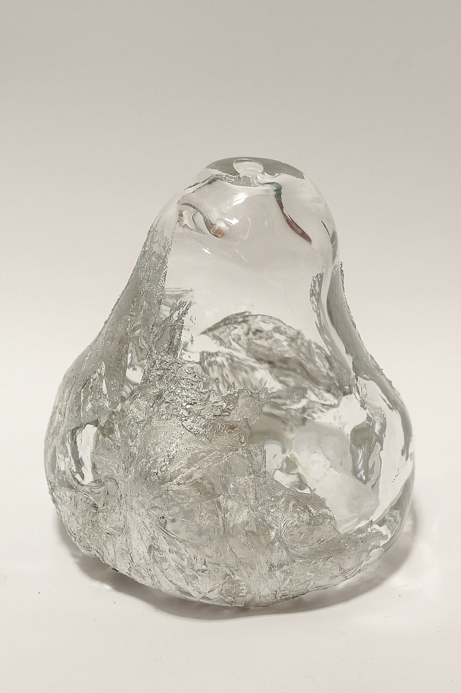
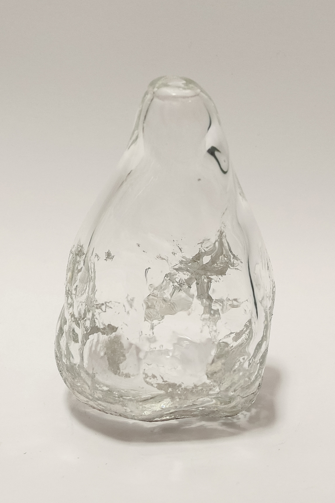
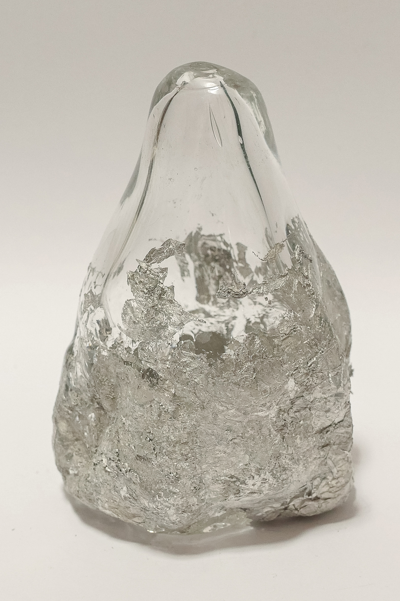

Io’s Vases (2021)






Overview:
Named for the most volcanically active body in our Solar System — Io (EYE-oh), one of Jupiter's moons — this series of vessels explores the material intersection of aluminium and glass in a way that preserves the volatility of each. Molten glass clings to its aluminium mould with the force of the artist's breath; the metal is affixed to the surface with a ragged sharpness that lends the vessels a hint of hostility.
Io’s Vases imagine themselves to be ornaments of some volcanic alien world — speaking more to science fiction aesthetics than anything familiar or human, while quietly nodding to the Roman tradition of mould-blown glass.